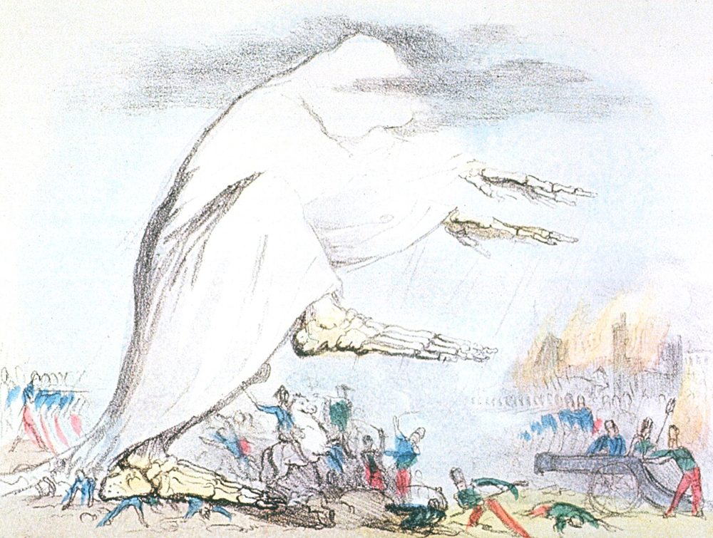

Dobra · dom nr 99 · 4 sierpnia 1855 · nowa historia z ksiąg
Doktor z Wiednia
Latem 1855 roku władze przysłały do Dobrej lekarza z Wiednia, żeby walczył z cholerą. Zostało po nim kilka słów w księdze zmarłych.
Rok 1855 zaczął się w parafii od nędzy. Na przednówku ksiądz raz po raz wpisywał przy zmarłych „ob miseriam”, z nędzy. Latem przyszła cholera. W czterech wsiach, których księgi zmarłych są już odczytane, czyli w Dobrej, Jurkowie, Chyszówkach i Półrzeczkach, w lipcu pochowano 93 osoby. W innych miesiącach tego roku chowano przeciętnie około 20. Przy 64 lipcowych zgonach ksiądz zapisał cholerę. W sierpniu było jeszcze 19 takich zgonów, a w całym roku 88.
W takie miejsca austriackie władze wysyłały lekarzy. Jednego z nich proboszcz wpisał do księgi zmarłych Dobrej pod numerem 81.
Z księgi zmarłych Dobrej, akt nr 81 z 1855 roku
Matthias Winter Medicinae Doctor ex Vindobona missus delegatus pro Epidemia Cholerae in Dobra.
Maciej Winter, doktor medycyny, przysłany z Wiednia jako delegat do epidemii cholery w Dobrej.
Dobra, zgony 1846–1879 · sygn. 4268/5510 · skan 021 · zobacz skan ↗
Doktor Winter zmarł 4 sierpnia 1855 roku w domu nr 99 w Dobrej. Miał 34 lata. W rubryce przyczyny ksiądz wpisał nie cholerę, tylko tyfus. Przed śmiercią doktor przyjął sakramenty, a następnego dnia pochował go proboszcz Dobrej.
Tyfus i cholera szły tego lata w parze. W Chyszówkach, w domu nr 47, w kwietniu zmarli na tyfus Teresa i Wojciech Mrozkowie, a w lipcu na cholerę ich dzieci: pięcioletnia Magdalena i osiemnastoletni Józef. Lekarz, który odwiedzał chorych, był narażony tak samo jak oni.

Maciej Winter nie był stąd. Nie miał w parafii rodziny, więc nikt nie przechował o nim opowieści. Wiemy tylko, że przyjechał pomagać i że został w Dobrej na zawsze.
Na ile to pewne
- PewneTreść wpisu o doktorze: imię, wiek, dom, przyczyna śmierci i pogrzeb. Odczyt porównany ze skanem.
- Do sprawdzeniaLiczby zgonów pochodzą z odczytu maszynowego ksiąg czterech wsi i nie były jeszcze sprawdzane wpis po wpisie.
Czego nie wiemy
- Skąd pochodził doktor Winter, kiedy przyjechał i ilu chorym pomógł. Krótkie poszukiwanie w internecie niczego o nim nie dało.
- Czy ma w Dobrej grób.
- Ślad może być w wiedeńskich pismach lekarskich z 1855 roku albo w aktach urzędu obwodowego w Nowym Sączu.
Źródła
- Księga zmarłych Dobrej, sygn. 4268/5510, skan 021, w serwisie Metryki PTG.
- Liczby zgonów: odczyty ksiąg zmarłych Dobrej (4268/5510), Jurkowa (4268/5525), Chyszówek (4269/5505) i Półrzeczek (4269/5520).
- „Chyszówki w księgach zmarłych 1786–1926” (2026), rozdział „Lata głodu i zarazy”.